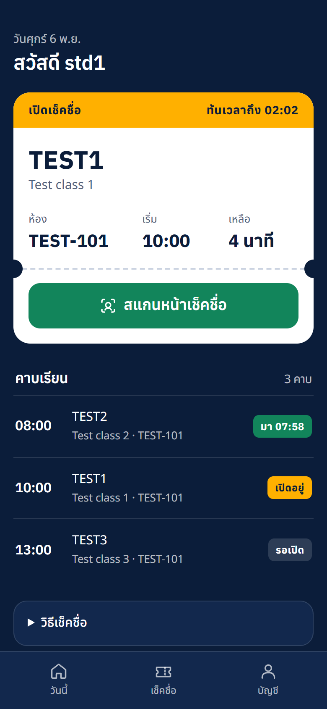
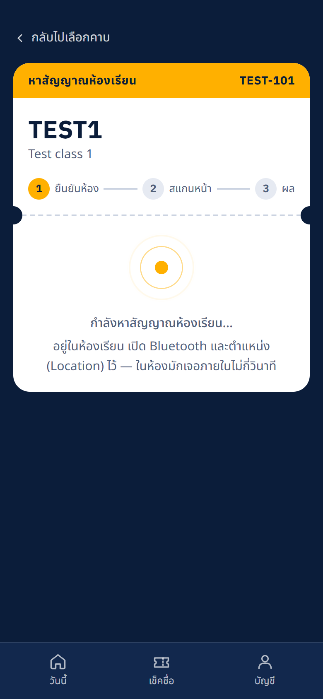
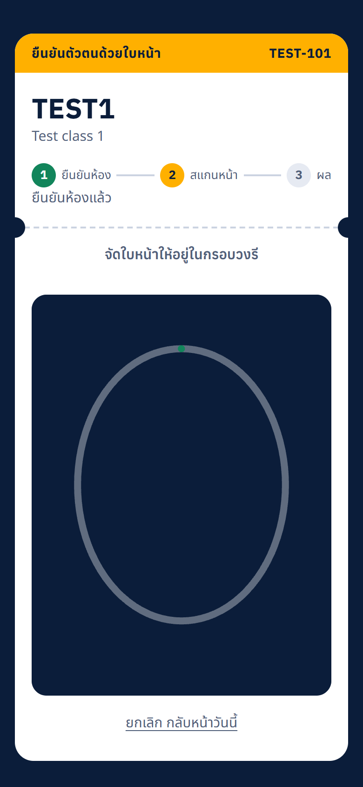
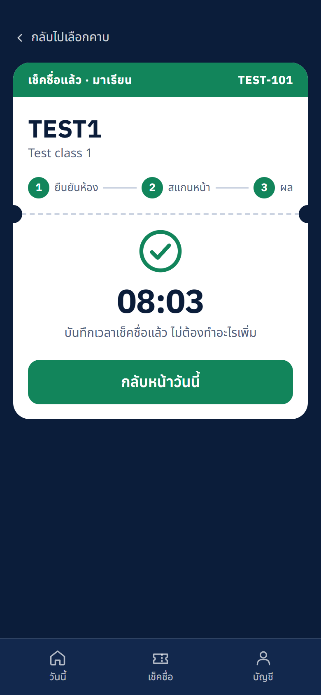
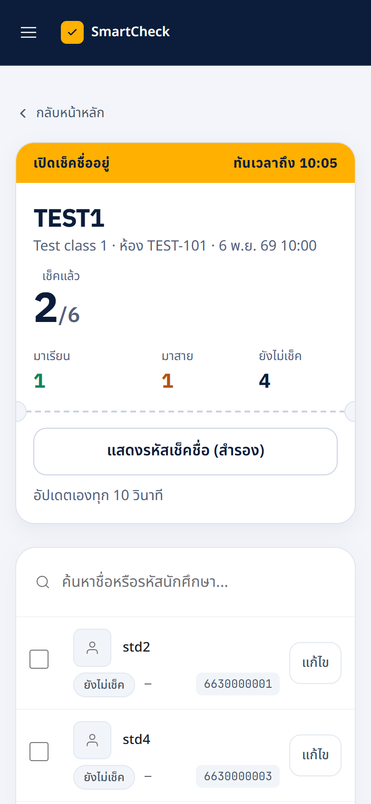

Motivation
- Calling the roll costs class time, and the cost grows with every name on the list.
- Proxy attendance is easy: a QR code can be forwarded, a GPS location can be faked, and a friend can answer "present".
- Students already carry a phone with Bluetooth and a camera. The classroom only needs a small board.
Goal
- A check-in that proves the student is in the room (room board) and is the enrolled person (face).
- The whole class at once: no queue, no gesture, no picker. Done in seconds after the teacher opens the class.
How a check-in works

1Teacher opens the class; the phone is notified

2The app finds the room board by itself

3Look at the camera: captured automatically

4Recorded, with the time

Teacher's phone: one tap to open the class (on time within 5, 10 or 15 minutes), then a live count "checked in N / M" with the students still missing listed first.
iPhone (no Web Bluetooth): a 6-digit code / QR on the teacher's screen replaces the room board; the face check is the same.
Security and privacy
- Room proof: the board broadcasts a code that changes every 5 s, signed with a per-room secret (HMAC). The server accepts a code for 30 s only, so a recording replayed later fails; a code relayed out live still needs the student's own face.
- Face: SCRFD detection + ArcFace R50 embeddings (InsightFace), compared with 7 templates from a 5-pose enrollment. One face per account.
- Liveness: passive anti-spoofing (MiniFASNet) instead of a head-turn challenge.
- Privacy (PDPA): consent before enrollment; no photos are kept from check-ins.
System overview
Results so far measured · Nov 2026
| What | Result | How |
|---|---|---|
| Notification reaches the phone | ≈ 1 s | after "open class", 2 phones |
| Room board found by the app | 0.13–0.45 s | in the room, Redmi |
| Server check-in (face + anti-spoof + record) | 0.83–1.10 s | 7 real check-ins |
| One student, tap → recorded | 9–10 s | 2 phones |
| Face model at the deployed threshold 0.40 | FRR 0.84% FAR < 0.001% | LFW, offline (6,409 images); not classroom data |
Field test: 10 students, one room to be added
Whole-class time
SmartCheck vs roll call
SmartCheck vs roll call
When each student
was recorded
was recorded
Bigger classes
(estimate from the test)
(estimate from the test)